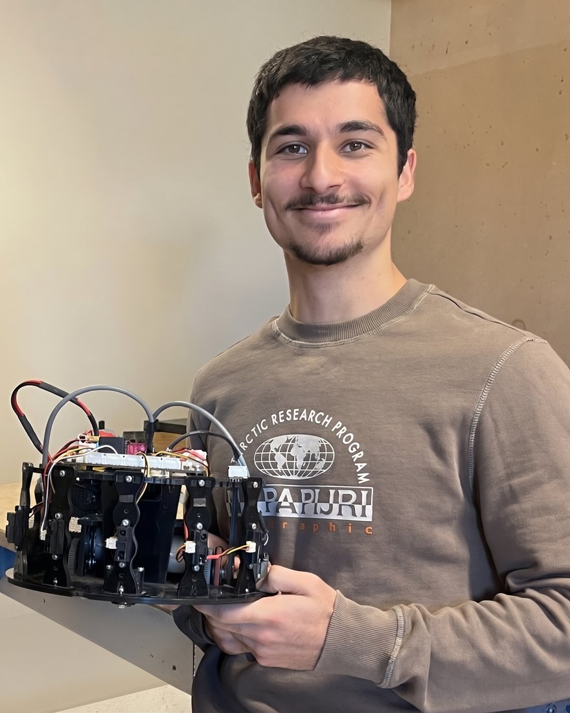
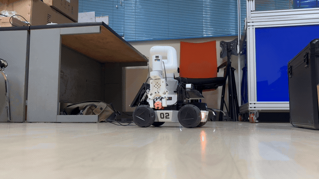
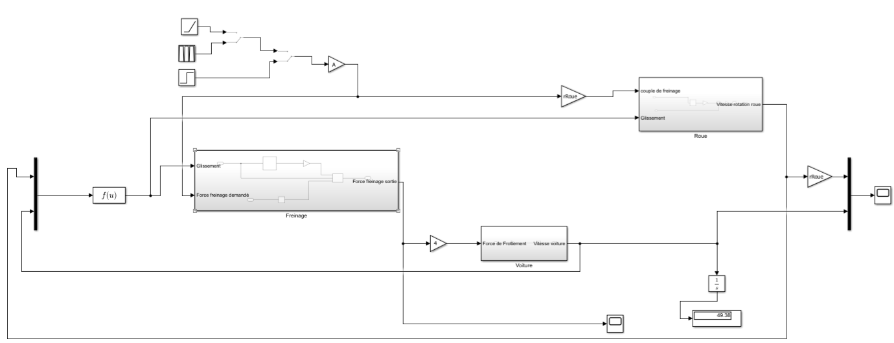
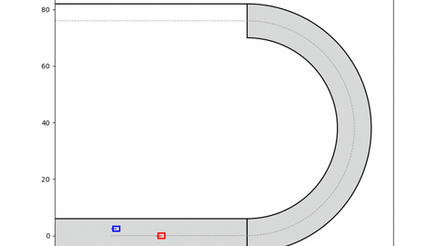
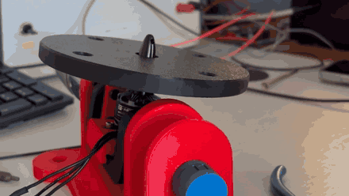
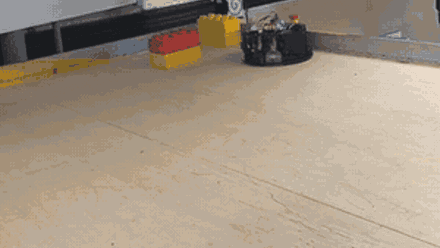
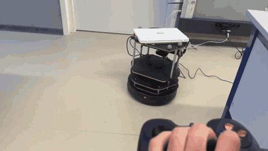

01
Robotics & autonomy
Navigation, mapping and the multi-machine plumbing that makes a ROS robot move on its own.
ROS 2ROSNav2CartographerCycloneDDSVisual servoing
Hi, I'm Tom — a robotics & mechatronics student at SeaTech. I take systems from their equations and a Simulink model all the way to code running on real hardware.


A LIMO mobile robot patrols and detects objects; a myCobot arm grasps them by visual servoing — a full autonomy stack on a Jetson.

Physical model, then PI / bang-bang / dead-zone controllers holding wheel slip at its grip peak.
−33% stopping distance vs locked wheels

A bicycle + Pacejka model built up to a closed-loop duel where the overtake emerges from the physics.
overtake emerges from the physics

An RC foiling drone kept level by a gyroscope — modelling, CAD, an embedded system, pool take-offs.
repeatable foil take-offs · ZYX Blue

Bare-metal firmware — PWM motor control, IR range sensing and a finite-state navigation loop.
bare-metal, no operating system

Finite-state-machine navigation on a TurtleBot 2 using LIDAR and bumper feedback.
LIDAR + bumper recovery FSM
Every project above, with its code, report and write-up.
6 public repositories
Start from the physics. Build and validate a Simulink or Python model until it behaves like the real thing.
Design and tune the loop — PI, bang-bang, state machines — and prove it in simulation before touching hardware.
Port it to real code: Python and ROS 2 nodes, or bare-metal C on a microcontroller.
Run it on the board and the robot, and handle the messy reality — latency, noise, positioning error.
Measure, debug and iterate until it works repeatably, not just once.
Navigation, mapping and the multi-machine plumbing that makes a ROS robot move on its own.
Detecting and locating objects in 3D from camera and depth data, then acting on them.
Building a system from its equations and designing the loop that keeps it stable.
The languages I build in, from quick scripts to bare-metal firmware.
Running code on the real board and the real robot — and designing the parts around it.
How the work gets built, versioned and written up.
I came to robotics through a chemistry-heavy prépa and a marine-systems engineering school, so I like problems that sit between fields: control loops, vehicle and fluid dynamics, embedded systems and perception. Most recently I built a full autonomous navigation-and-grasping stack on a mobile manipulator during a research internship in Bangkok.
“His work covered developing an autonomous industrial mobile robot by mounting a myCobot manipulator arm on an AgileX LIMO platform to perform real-world grasping tasks — issued in recognition of his dedication and professional conduct throughout the program.”
Open to internship offers and happy to discuss a project. The fastest way to reach me: